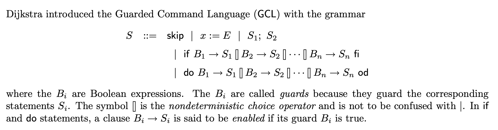
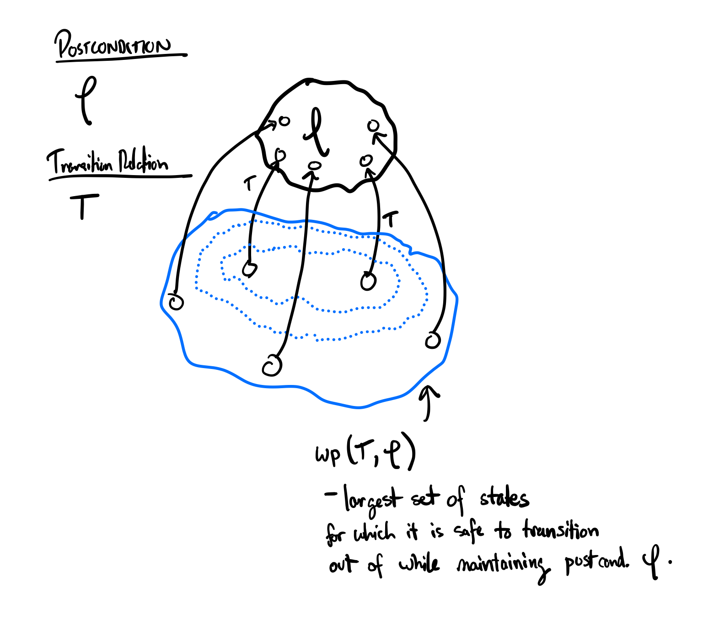

The notion of weakest precondition in program analysis derives from the work of Dijkstra (Dijkstra 1975). He introduced the Guarded Command Language as a simple modeling language for program specification e.g.

So, given a program \(S\) and a postcondition \(\varphi\), we define the weakest precondition as the weakest property of the input state that guarantees that \(S\) will terminate with the postcondition \(\varphi\), denoted \(wp(S, \varphi)\). In the definition of GCL, we can provide definitions of how to compute the weakest precondition for various program statements. For example, for an assignment statement \(x := E\), we have that \[\begin{aligned} wp(x := E, \varphi) \equiv \varphi\{E/x\}\end{aligned}\] where \(\varphi\{E/x\}\) represents the property \(\varphi\) with appearances of \(x\) in \(\varphi\) replaced with \(E\). For example, \[\begin{aligned} wp(x := x + 1, x = 3) &\equiv (x = 3)\{x+1/x\} \\ & \equiv (x+1) = 3\\ & \equiv x = 2\\\end{aligned}\]
From a more semantic perspective, we can also think about weakest preconditions in terms of symbolic transition relations. If we have a transition relation \(T\) and a postcondition \(\varphi\) (i.e. a state predicate), the weakest precondition of \(T\) with respect to \(\varphi\) is the weakest predicate \(P\) (in other words, the largest set of states) such that a transition out of any state in \(P\) will uphold the property \(\varphi\).

We can also consider weakest precondition computation as a kind of backwards symbolic execution. That is, we start from a given postcondition predicate, and a given transition relation, and execute the transition relation backwards to compute the states contained in the weakest precondition.